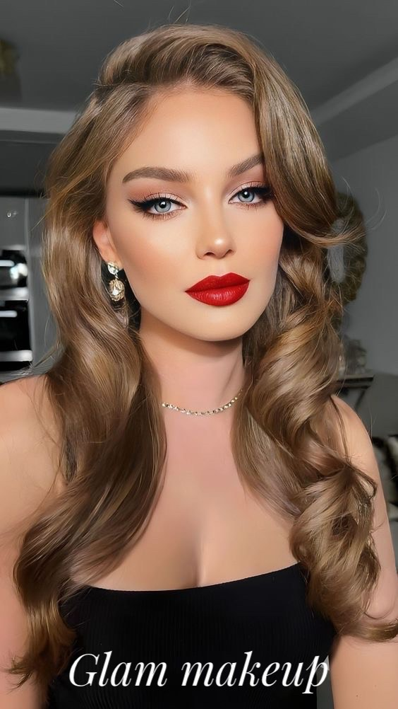
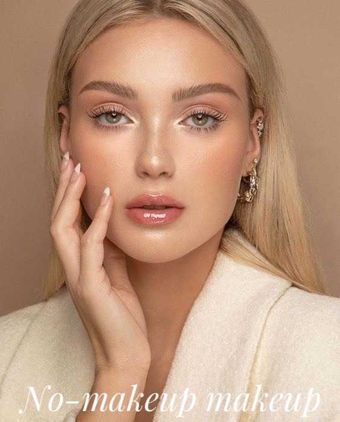
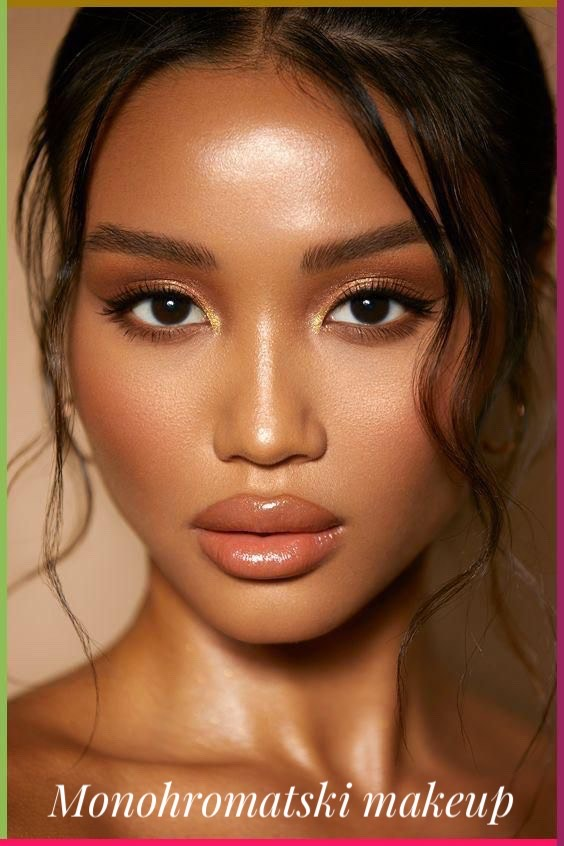
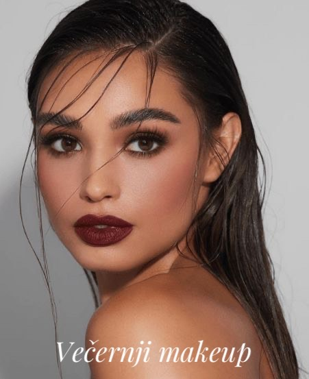
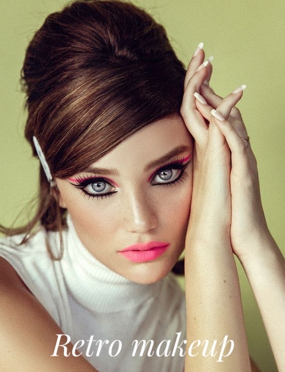
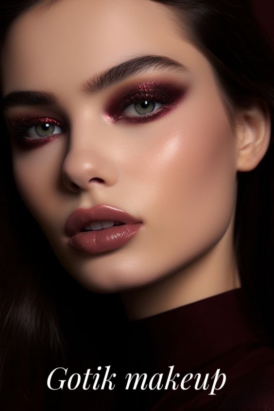
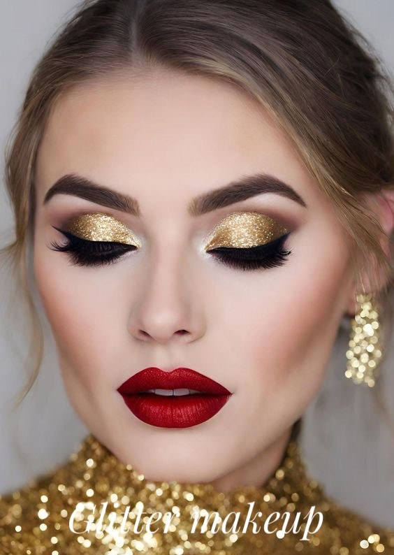

<html lang="en"></html>
<head>
    <meta charset="UTF-8">
    <meta name="viewport" content="width=device-width, initial-scale=1.0">
    <link rel="stylesheet" href="assets/css/style.css">
    <link rel="preconnect" href="https://fonts.googleapis.com">
    <link rel="preconnect" href="https://fonts.gstatic.com" crossorigin>
    <link href="https://fonts.googleapis.com/css2?family=Caveat:wght@400..700&display=swap" rel="stylesheet">
    <title>Tehnike</title>
</head>
<body>
    <header>
        <div class="top-header">
            <div class="top-content">
                <span id="email"><a href="https://mail.google.com" target="_blank">&#9993;</a><p>popicsanja99@gmail.com</p></span>
                    <span>
                        <a href="https://www.facebook.com/sanja.popic.50/" class="button" target="_blank">
                            
                        </a>
                        <a href="https://www.instagram.com/sanja_popic/" class="button" target="_blank">
                            
                        </a>
                        
                    </span>
            </div>
        </div>
        <div class="bottom-header">
            <div class="bottom-content">
                <div id="bottom-left">
                    <span><a href="index.html"><p>ŠminkeRAJ</p></a></span>
                </div>
                <button onclick="mobileMenu()">MENU</button>
                <nav>
                    <ul>
                        <li><a href="index.html">POČETNA</a></li>
                        <li><a href="sminkazalice.html">ŠMINKA ZA LICE</a></li>
                        <li><a href="sminkazaoci.html">ŠMINKA ZA OČI</a></li>
                        <li><a href="sminkazausne.html">ŠMINKA ZA USNE</a></li>
                        <li><a href="tehnike.html">TEHNIKE</a></li>
                    </ul>
                </nav>
            </div>
        </div>
    </header>

    <section class="page-content-s">
        <div class="s-content">
            <div class="t-content">
                <h1>
                    Makeup Look
                </h1>
                    <div class="slider-wrapper1">
                        <button id="prev-slide" class="button" >&#8592;</button>
                        <div class="images-list">
                            
                            
                            
                            
                            
                            
                            
                        </div>
                        <button id="next-slide" class="button" >&#8594;</button>
                    </div>
                    <div class="slider-scrollbar">
                        <div class="scrollbar-track">
                            <div class="scrollbar-thumb"></div>
                        </div>
                    </div>
            </div>
            <div class="middle-content">
                <h2>Tipovi makeup look-ova</h2>
                <div class="proizvodi">
                    <p>1. Glam makeup look</p><span class="plus">+</span>
                </div>
                <div class="text-container">
                    <p>Ovo je stil šminke koji naglašava glamur i sofisticiranost, često koristeći proizvode kao što su sjajne senke za oči, 
                        mačkasti ajlajner, veštačke trepavice i smeli ruž. 
                        Glam makeup look može vas učiniti da zasijate i istaknete se na svečanim prilikama, 
                        venčanjima ili bilo kojim drugim događajima gde želite da ostavite utisak.
                    </p>
                </div>

                <div class="proizvodi">
                    <p>2. No-makeup makeup look</p><span class="plus">+</span>
                </div>
                <div class="text-container">
                    <p>
                    Ovo je stil šminke koji ima za cilj da stvori prirodan i besprekordan look, kao da uopšte ne nosite šminku. 
                    No-makeup makeup look može poboljšati vaše crte lica i ten, a da ne deluje kao da se previše trudite. 
                    Savršen je za svakodnevno nošenje, jer je lak, brz i laskav za sve.
                    </p>
                </div>

                <div class="proizvodi">
                    <p>3. Monohromatski makeup look</p><span class="plus">+</span>
                </div>
                <div class="text-container">
                    <p>Ovo je stil šminke koji koristi istu boju ili boje koje su u okviru iste nijanse za oči, usne i obraze. 
                        Monohromatski makeup look može stvoriti harmoničan i elegantan efekat, kao i olakšati primenu šminke. 
                        Možete izabrati bilo koju boju koja odgovara vašem raspoloženju, tonu kože i kombinaciji odeće, kao što su ružičasta, breskvaste, crvena ili ljubičasta.
                    </p>
                </div>

                <div class="proizvodi">
                    <p>4. Večernji makeup look</p><span class="plus">+</span>
                </div>
                <div class="text-container">
                    <p>Ovo je stil šminke koji je prikladan za formalne događaje, zabave ili noćne izlaske, često koristeći proizvode kao što su tamne senke za oči, dimaste oči i smeli ruž.
                        Večernji makeup look može stvoriti dramatičan i intenzivan efekat, kao i upotpuniti vašu večernju odeću. 
                        Takođe možete dodati malo sjaja ili glittera na oči ili usne za glamurozniji look.
                    </p>
                </div>

                <div class="proizvodi">
                    <p>5. Retro makeup look</p><span class="plus">+</span>
                </div>
                <div class="text-container">
                    <p>Ovo je stil šminke inspirisan trendovima lepote iz prošlosti, kao što su 1920-e, 1950-e ili 1980-e, 
                    često koristeći proizvode kao što su crveni ruž, mačkasti ajlajner ili šarene senke za oči. 
                    Retro makeup look može vam dati vintage i nostalgičan osećaj, kao i pokazati vašu ličnost i kreativnost. 
                    Takođe možete mešati i kombinovati različite elemente i boje iz različitih era kako biste stvorili svoj jedinstveni retro look.</p>
                </div>

                <div class="proizvodi">
                    <p>6. Gotik makeup look</p><span class="plus">+</span>
                </div>
                <div class="text-container">
                    <p>Ovo je stil šminke koji je pod uticajem gotičke subkulture, često koristeći proizvode kao što su crna senka za oči, crni ajlajner, 
                    crni ruž i tamni lak za nokte. Gotik makeup look može izraziti vašu mračnu i oštru stranu, kao i dati hrabar i buntovan stav. 
                    Takođe možete dodati neke dodatke poput čoker ogrlica, pirsinga ili tetovaža kako biste upotpunili svoj gotik look.</p>
                </div>

                <div class="proizvodi">
                    <p>7. Glitter makeup look</p><span class="plus">+</span>
                </div>
                <div class="text-container">
                    <p>Ovo je stil šminke koji koristi glitter ili proizvode sa sjajem kako bi dodao blistavost i sjaj vašem licu, često na očima, usnama ili obrazima. 
                    Glitter makeup look može vas učiniti zabavnom i svečanom, kao i privući svetlost i pažnju. 
                    Možete koristiti bilo koju boju ili oblik glittera koji vam se sviđa, kao što su srebrna, zlatna, ružičasta ili u obliku zvezde.</p>
                </div>

            </div>
            <div class="bttm-content-s">
                <h1>Trikovi u šminkanju:</h1>
                <p>
                    <strong>1.</strong> Zagrevanje uvijača za trepavice pre upotrebe može dati vašim trepavicama veći i dugotrajniji uvijeni izgled. <br>
                    <strong>2.</strong> Nanesite nude ili belu olovku na vodenu liniju kako biste proširili oči.<br>
                    <strong>3.</strong> Koristite puder u prahu da biste postigli duže trepavice. <br>
                    <strong>4.</strong> Fiksirajte ruž sa kompaktnim transparentnim puderom. <br>
                    <strong>5.</strong> Nanesite korektor u obliku trougla ispod očiju umesto samo na mestu podočnjaka; to će stvoriti iluziju većih i osveženijih očiju. <br>
                    <strong>6.</strong> Koristite belu olovku za oči da istaknete svoje obrve. <br>
                    <strong>7.</strong> Koristite senku za oči kao olovku za oči. <br>
                    <strong>8.</strong> Operite svoje četkice za šminkanje sa maslinovim uljem i tečnim sapunom.
                </p>
            </div>

        </div>
    </section>

    <footer>
        <div class="footer">
            <div class="bottom-content">
                <div id="bottom-left">
                    <span><p>ŠminkeRAJ</p></span>
                </div>
                <nav>
                    <ul>
                        <li><a href="index.html">POČETNA</a></li>
                        <li><a href="sminkazalice.html">ŠMINKA ZA LICE</a></li>
                        <li><a href="sminkazaoci.html">ŠMINKA ZA OČI</a></li>
                        <li><a href="sminkazausne.html">ŠMINKA ZA USNE</a></li>
                        <li><a href="tehnike.html">TEHNIKE</a></li>
                    </ul>
                </nav>
            </div>
            <hr>
            <h3>Copyrights &#169; ŠminkeRAJ</h3>
        </div>
    </footer>


        <script src="assets/js/script1.js"></script>
</body>
</html>